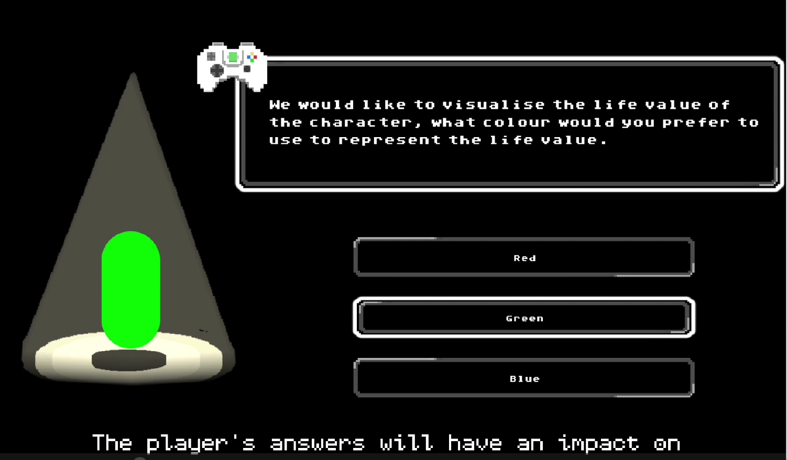
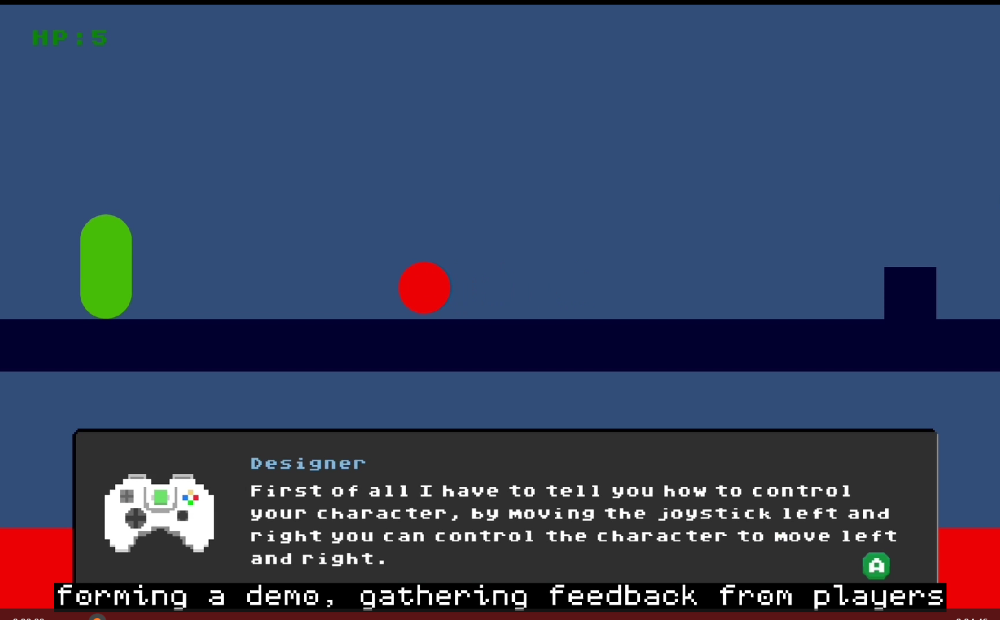

UAL · MA Term 3 · 2023 · SoloUAL · 硕士第三学期 · 2023 · 独立
MetaGame
Unity · Meta-narrative Platformer
A solo platformer that puts the player in the role of a playtester. Across three versions of the same game, play, feedback and revision become the structure of the story. I designed the concept and levels and implemented the Unity WebGL build. 一个让玩家扮演试玩者的独立平台游戏。同一游戏的三个版本，把游玩、反馈和修改组成故事结构。我负责概念、关卡设计，以及 Unity WebGL 版本的实现。
Problem问题
A deliberately unfinished version must still tell the player enough to act; otherwise it just looks like an unclear game.
故意做得不完整的版本，仍要让玩家知道该怎么做；否则看起来只是一个没做好的游戏。
Decision决策
Bring development language into the fiction: a designer character gives instructions, and feedback prompts and a DATA screen expose speed, jump and HP.
把开发用语做进剧情：由设计师角色给出操作说明，反馈提示和 DATA 界面把速度、跳跃、生命值摆到玩家面前。
Outcome结果
Three authored versions that play as a playtester's story, published as a WebGL build on itch.io.
三个预设版本组成一段试玩者的故事，网页版发布在 itch.io。

The playtester loop试玩者循环
Play游玩
Encounter the platforming rules and obstacles of a version.
体验一个版本中的平台规则与障碍。
Respond反馈
Leave feedback through prompts inside the fiction.
通过剧情内的提示留下反馈。
Revisit再体验
Move to the next authored version and encounter its changes.
进入下一个预设版本，体验其中的变化。
This diagram shows the narrative loop, not a reconstruction of the three individual levels.此图展示叙事循环，不代替三个具体关卡的对照。

Designed imperfections有意设计的不完善
Design problem. An unfinished version must still communicate enough for the player to act. Otherwise, the intended fiction becomes indistinguishable from an unclear game.
设计问题。一个“尚未完成”的版本仍需提供足够的信息，让玩家知道如何行动，否则预设的叙事会变成单纯的难以理解。
Presentation. Movement instructions come from a designer character inside the scene. Feedback prompts and the DATA screen bring development language into the playable space: speed, jump, attack, HP and slide distance become visible parts of that framing.
呈现方式。场景中的设计师角色解释移动；反馈提示和 DATA 界面把开发语言带进游戏。速度、跳跃、攻击、生命值与滑行距离成为玩家可见的内容。
Scope. The three versions are authored stages. These screenshots show the framing and parameter interface, rather than a controlled comparison of every change between versions.
范围。三个版本是预先设计的阶段。现有截图展示叙事包装与参数界面，尚不足以逐项对照三个版本的改动。

Implementation and delivery实现与交付
I developed the concept, three-stage level structure and Unity C# implementation, and published a WebGL build. The three authored versions turn development stages into a sequence the player can experience.
我负责概念、三个阶段的关卡结构与 Unity C# 实现，并发布 WebGL 版本。三个预先设计的版本，把开发阶段转化为玩家可以亲自经历的过程。